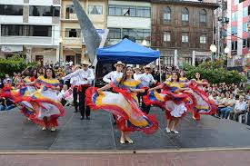
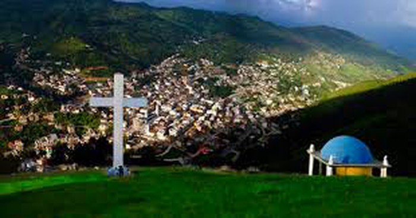
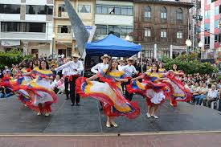
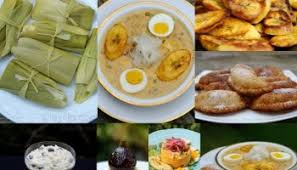

Danzas Tradicionales
Las danzas autóctonas de Piñas reflejan la historia y tradiciones de sus habitantes...
Ven y conoce lo mejor del Ecuador
La ciudad de Piñas es el centro urbano y cabecera del cantón Piñas, perteneciente a la Provincia de El Oro, al suroeste de Ecuador. Es también conocida como «Ciudad Orquídea de los Andes», derivado del mismo apodo dado al cantón debido a la gran variedad de orquídeas encontradas en esta región del Ecuador meridional.
| Factores | Detalles |
|---|---|
| Ubicación | Provincia de El Oro, Ecuador |
| Apodo | Ciudad Orquídea de los Andes |
| Población | Aproximadamente 60,000 habitantes |
| Atractivo Principal | Variedad de orquídeas y tradiciones culturales |
Las danzas autóctonas de Piñas reflejan la historia y tradiciones de sus habitantes...
Deléitate con platos típicos como el seco de gallina criolla, tamales y deliciosos dulces tradicionales.
En esta zona los visitantes pueden disfrutar de la refrescante agua natural que brota de la montaña Buenaventura., en éste mágico lugar rodeado de una flora y fauna. La cascada tiene una altura aproximadamente de 10 metros, su caída de esta agua natural, cuyo nombre fue bautizada como “Viringo”

En esta ciudad se celebran las fiestas en honor a la Virgen de la Merced.